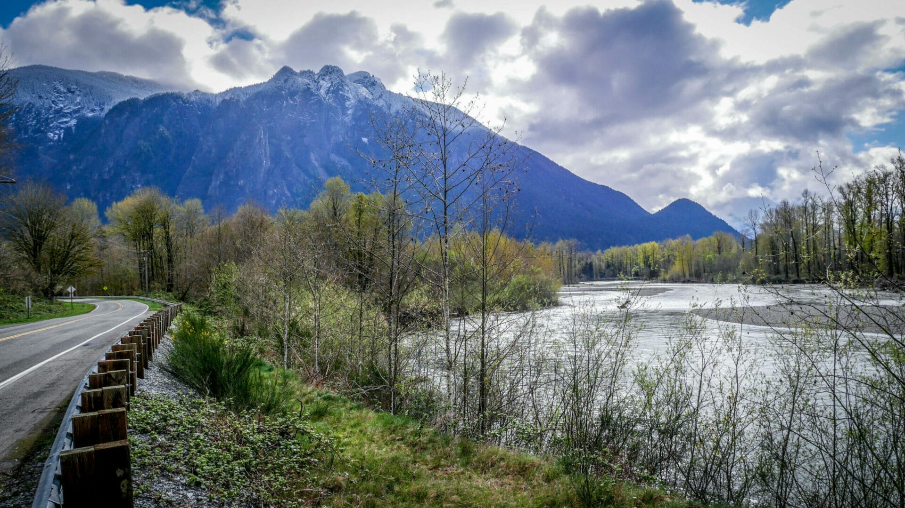
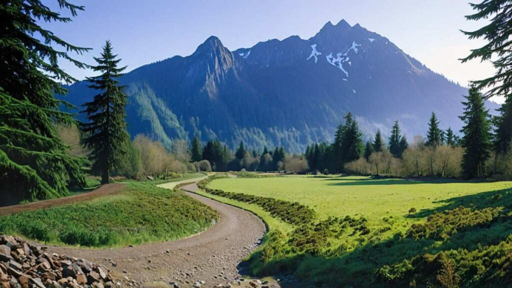
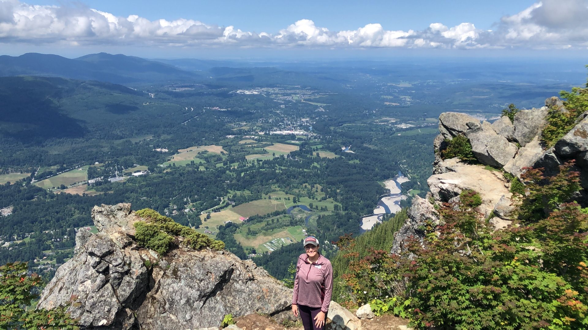
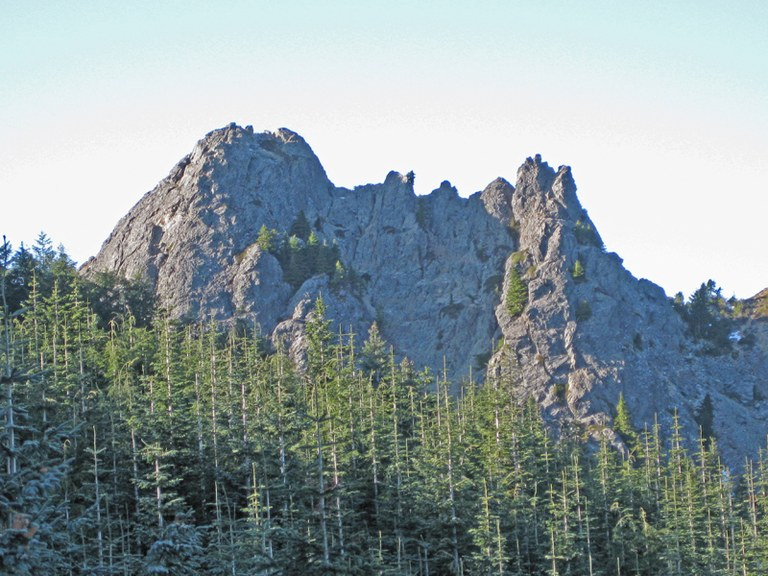
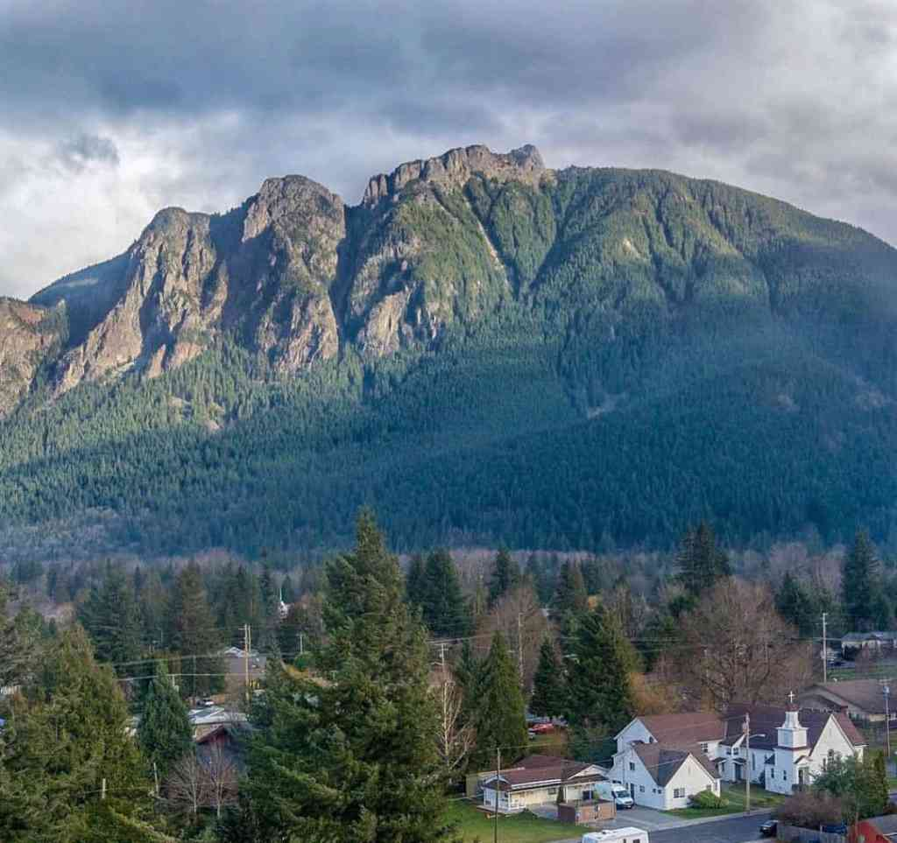

从西雅图开车向东，走 I-90 不到45分钟，一座陡峭的山峰会突然从公路右侧跃入视野——它的西壁几乎是垂直的，像一堵被人从地底推出来的巨墙。这就是 Mount Si，华盛顿州最受欢迎的徒步山，也是一个藏着神话、大火与地质奇迹的地方。
🌋这座山，其实来自海底
Mount Si 的岩石年龄可以追溯到侏罗纪至白垩纪，大约一亿五千万年前。它不是普通的火山，而是一座远古海洋板块火山的残骸——当太平洋板块俯冲进入北美大陆时，这块海底岩石被刮削下来，随地质运动缓慢抬升，最终在喀斯喀特山脉西缘定格，成为今天海拔4,167英尺的山体。[1]
脚下踩的每一块石头，曾经都在太平洋的海底沉睡过。山坡上那片看起来生机勃勃的森林，其实只有大约八十年的树龄——1893年的一场大火，几乎把原始森林烧了个干净。[2]

🌙月亮神坠落的地方
在欧洲人到来之前，这片土地已有人类居住至少九千年。斯诺夸尔米族用他们自己的语言称这座山为 q̓əlbc，并将它视为神圣的存在。[1]
这个故事的结构与普罗米修斯盗火相似：英雄从神那里偷来光明，带给人间。不同的是，在斯诺夸尔米的版本里，付出代价的是神本身，而那代价，成了一座山。
👴"西叔"与山名的由来
1860年，一位名叫 Josiah Merritt 的老人在 Mount Si 山脚建起了一间小屋。邻居们亲切地叫他"Uncle Si"（西叔）。他种土豆、养猪、打理果园，用一根加长的犁柄骑在马背上耕地——因为他的脚有残疾，这是他自己想出来的办法。[3]
1882年，Merritt 在劈完一批木头后染上肺炎，几天后去世，葬在 Fall City 的墓地。人们把那座俯瞰河谷的山峰叫做"Uncle Si 的山"，后来简称 Mount Si。一个普通老人的绰号，就这样变成了华盛顿州最具标志性的地名之一。


🥾步道的诞生与重建
1973年，The Mountaineers 登山俱乐部开凿了今天的主步道。[4] 此前，人们已经在山上走了几十年的野路。步道建成后，登山人数迅速攀升，到2006年已达每年约二十万人次——相当于西雅图体育场三场满座观众的总和。
这么多脚踩下去，步道很快就撑不住了。路面侵蚀，转弯塌陷，裸露的岩石绊倒行人，排水系统几近失效。2003年，一场历时三年的重建工程启动：超过八千英尺的步道被重新开挖，二十二处转弯重建，两百八十级石阶安装，八百一十六英尺岩石挡土墙铺设。志愿者贡献了超过一万三千工时，把总花费压到了约十万美元。[4]
2006年10月，竣工典礼在秋叶金黄的山道上举行。一群志愿者用一把园艺剪刀剪断了粉色彩带。没有仪式，只有满山的落叶和疲惫而满足的笑脸。
🪨Haystack：山顶的那块大石头
走到山脊平台之后，大多数人会停下来休息、拍照、吃东西。但还有一部分人，会继续向上——攀上那块从山脊拔地而起的巨型岩石。
Haystack 因形似农场里堆起的干草垛而得名。它高约一百英尺，攀登难度是三级攀岩——需要手脚并用，没有绳索保护，岩石质量也不算好，有真实的坠落风险。[5] 大多数徒步者不会去爬它，但它始终在那里，像一个沉默的邀请。

从 North Bend 小镇或 I-90 高速公路上望向 Mount Si，你会看到山顶有两个并立的尖顶：一个是主峰山脊，另一个就是 Haystack。1990年，David Lynch 把这里变成了电视剧《双峰》的拍摄地，剧名"Twin Peaks"正是来自这个轮廓。[6]
斯诺夸尔米族的传说讲道，月亮神坠落后，他的面容留在了山顶的岩石上。许多登上 Haystack 的人，会在某个特定角度的岩石纹理中，看到一张模糊的脸。这个问题没有答案，但寻找本身，或许就是意义所在。
🔥大火、伐木与守护
今天山坡上那片郁郁葱葱的森林，其实只有大约八十年的树龄。1893年夏末，一场大火席卷斯诺夸尔米河谷。《西雅图邮讯报》这样描述：火焰在 Mount Si 山坡的灌木丛间蔓延，入夜后可见火光从一片树丛跳向另一片，仅雪松一项损失就达六千万板英尺，整个河谷笼罩在浓烟之中。[2] 此后数十年，伐木业又将山坡上的原始森林几乎砍伐殆尽。今天山上的树木，是这段历史之后重新生长的次生林。
1976年，一家采石场公司计划在山体上开采岩石。当地居民迅速行动，向州议员请愿。1977年，华盛顿州议会立法创建"Mount Si 保护区"。1987年升级为自然资源保护区，今天面积已超过13,000英亩。[7]

站在 North Bend 的街道上抬头望去，Mount Si 的西壁几乎垂直地矗立在天际。那堵岩壁里，有海底的记忆，有月亮神的传说，有1893年大火的灰烬，有一万三千小时志愿者的汗水，有《双峰》的神秘氛围，也有每年超过十万双脚踩出的痕迹。
它只是一座山。但它也是所有这些故事的容器。
参考来源
- Wikipedia: Mount Si — 海拔、地质、卢舒特西德语名称、斯诺夸尔米神话
- Snoqualmie Valley Museum: From the Collection: 1893 Fires — 1893年大火原始报纸记录
- Snoqualmie Valley Museum: Josiah "Uncle Si" Merritt (2026) — Merritt 生平详细记录
- Seattle Times: Rehabilitating Mount Si trail was a labor of love (2006) — 步道重建工程数据与引言
- The Alpine Guide: Mount Si — Haystack 攀登难度、年访客量
- Discover North Bend: Twin Peaks Filming Locations — 《双峰》拍摄地信息
- Washington RCW 79A.05.725 — Mount Si 保护区立法原文